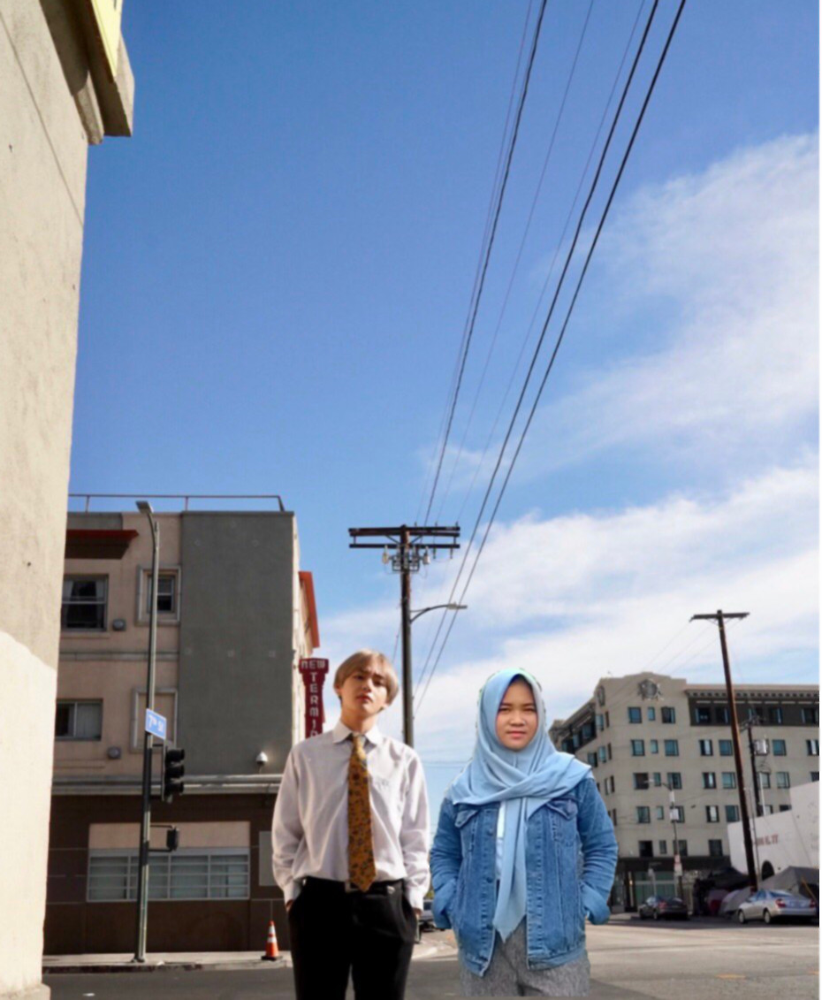
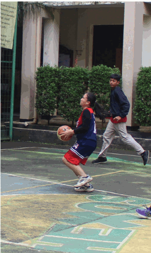

NAILA's PROFILE
Welcome to My Profile Naila's World
Naila's
WEB PROFILE
ABOUT ME
Well hello! Welcome to my page
Hai Nama ku Naila Rafa Cendraningsih, biasa dipanggil Naila. Aku lahir di Jakarta, 30 April 2001. Aku bersekolah di SMK-SMAK Bogor, saat ini kelas 11. Aku anak pertama dari 2 bersaudara, aku punya adik laki-laki berumur 13 tahun yang bersekolah di SICC (Sekolah Islam Cendekia Cianjur) Ingin tahu lebih banyak? Kalian boleh lihat di salah satu akun sosial ku.
MY HOBBIES
1. 'fangirling'
Aku memulai hobi ini saat kelas 10. Aku adalah seorang ARMY. All about BTS selalu aku ikuti.
2. Nonton Drakor
Hobi ini juga aku mulai saat kelas 10. Awalnya aku ga suka, tapi makin kesini aku terpesona sama oppa-oppa di drama.
3. Main Basket
Saat kelas 7 aku hanya mengikuti basket sebagai ekstrakulikuler daaann lama kelamaan aku menjadikan basket sebagai hobi ku.
ALL ABOUT MY FAVORITES
1. Warna
Aku sangat suka warna pink. Awalnya aku sangat benci dengan warna pink. Tetapi setelah dipikir-pikir pink is so cute. Warna pink itu bisa ngebuat aku ngerasa tenang, warna pink juga enak dipandang.
2. Makanan
Aku bukan tipe orang yag pilih-pilih makanan sih. Tapi aku suka makanan yang tidak pedas. Jika disuruh pilih antara mi ayam dan bakso, aku lebih memilih mi ayam. Soalnya mi ayam bisa ngebuat aku lebih kenyang dibanding bakso hehe... Bukan, bukan karena mi ayam bisa ngebuat aku lebih kenyang, tapi aku memang suka dengan mi ayam. Entahlah, ada sesuatu di dalam mi ayam yang ngebuat aku ga bosen buat makannya.
3. Chocolate
Nah ini nih, salah satu makanan yang bisa naikin mood aku. Pasti kalian tau dong, kalo coklat mengandung dopamine yang bisa ngebuat mood kita jadi lebih baik. Selain itu coklat juga bermacam-macam jenisnya, dari beberapa jenis coklat, aku paling suka dengan dark chocolate karena rasanya yang tidak terlalu manis.
4 Kim Taehyung (V)
Di bagian 'my hobbies', aku menyinggung jika aku adalah seorang ARMY, yap! ARMY adalah sebutan untuk fans BTS. Salah satu bias ku adalah Kim Taehyung atau yang memiliki nama panggung V. Menurut aku, Taehyung punya 2 sisi yang berbeda, dia akan terlihat sexy saat menjadi V dan akan terlihat cute saat menjadi Kim Taehyung atau dia bisa terlihat cute dan sexy dalam waktu bersamaan.

Quote in My Life
IF YOU BE DILLIGENT, YOU CAN BE SUCCESS
EDUCATIONAL BACKGROUND
-
1. SDN Batu Ampar 01 Pagi (2009-2011)
-
2. SDN 1 Cigombong (2011-2014)
-
3. SMPN 1 Cigombong (2014-2016)
-
4. SMK-SMAK Bogor (2016-sekarang)
KIM TAEHYUNG AND I

PLAYING BASKETBALL

Follow Me
@nailarafa_
@naiira_v